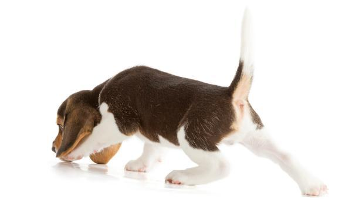

Energía sin fin
Al igual que nosotros nuestros amigos también pueden tener épocas donde los vemos más cansados, menos vitales y con pocas ganas de hacer amigos, por eso esta receta le hará recargar las pilas y tener energía sin fin.
Ingredientes
- 50% Carne de boca de vacuno
- 50% Higado de vacuno
- 5% Sangre de vacuno
- 5% Grasa de vacuno
- 15% Pecho de ternera picado con hueso
- 20% Mix fruta y verdura
- Carcasa de escaramujo
- Aceite de pescado y onagra
Preparación
